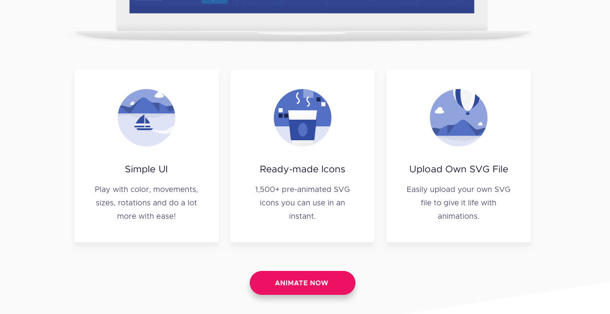

SVG Animation Tool
Web-based and easy-to-use SVG animation tool

Summary
My client is a SaaS company that helps non-designers and non-technical people create beautiful infographic images with ease.
After the tool introduced its library of animated SVG icons, users began to request access to the animated files and even the possibility to save them on their local computer. This led to the birth of the SVG animation tool.
The SVG animation tool is an easy-to-use and web-based tool that enables even the non-designers and non-technical people to customize animation from its library of pre-animated images or upload their own SVG file and animate it from scratch.
•••
Case Study
•••
I. Identifying the Problem
Lynda is 30 year old project manager in a big medicine company. She is creative but non tech-savvy. She is also super-busy and a perfectionist.
One day, she received a task to make a presentation about a somewhat uninteresting report to their team. She thought that in order to keep the team’s attention to the presentation regardless of its boring topic, she decided to include animated images to spice-up her work.
After using quite a few animated GIFs in her presentation, she realized that the images become blurry and not HD when viewed from their large monitor in the presentation room. This led Lynda to find a way to fix the issue and she later discovered about animated SVG and the wonders of its scalability.
The problem is that animation tools are too complicated for her to use and most of them requires installation. On top of that, she has no idea if there’s any tool she can use in her level of technical skills. Despite these problems, she tried her luck and Googled “Simple easy-to-use animation tool” and ended up on SVG Animation Tool’s landing page.
Since she’s super busy, she simply judged the tool by its header (at least up to subheader) and got convinced to use the tool based on what she saw.
•••
II. Challenges and Solutions
From Embedded Window to Full-screen
Initially, the animation tool is meant to be put as an embedded window inside the landing page. Since the goal of the first release is to test whether people are willing to pay for the service or not, we decided that the tool should be accessible in the quickest possible way.

Wireframe of the earliest version of the tool. Too technical looking.
Mock-up of the embedded window version of the tool.
However, having the tool embedded on the landing page feels out-of-place and can distract users from their main task.
The team concluded that it has to be on a separate page. But having the goal of quick access to the tool, we decided to implement a full-screen overlay window instead of a separate page to avoid separate loading time.
•••
Should be User-friendly. Even to Non-technical People.
We wanted the animation tool to be as user-friendly as possible that non-designers or non-developers can use the tool with ease.
Wireframes for the user-flow and interactions during the early stages of design.
Earlier version of the left-panel tool for animation.

Paper prototype to quickly ideate UI for the editing on canvas feature and advanced options.
Moving objects directly on canvas gives user more freedom and ease.
Full-screen overlay window version of the tool designed not to overwhelm users on first sight.
Applying Hick’s law in my design, I decided to hide all advanced options by default to lessen user’s cognitive load in making decisions while still having advanced options available for more advanced users.

Help text on the timeline's empty state
Help text for a search's empty result
To guide the users on what to do, tips and help texts are shown on empty, error, and restricted pages and buttons. In Addition, a “How-to” feature with videos and instructions is available anytime for users to know more about the main features of the tool.

Pop-up modal for the "How-to" feature. The Previous "<" and Next ">" buttons are placed close together to reduce the distance required for the mouse to travel when navigating.
•••
Design Consistency and Documentation
Part of my job is also to make sure that the design's consistency will be well executed up to production. So I need to create a documentation that will clearly communicate how each UI elements behave including its different states.

Elements' design guideline snapshot
Components' design guideline snapshot
•••
Product's Marketing Page Must be Compelling
Above the fold was made as eye-catchy as possible by using bright colors, large texts and an animated SVG hero image.

My rough sketh for the hero image illustration

Animated hero image
The slight animation of the hero image was intentional to make sure that it’s enough to catch the user’s attention but not too distracting to keep the user from the CTA button. I created the animation using SVG and CSS. See it live here!
Mid-part of the website, showing "Animate Now" call-to-action button
A call-to-action button is shown for each section of the website for reinforcement.
•••
III. Conclusion
The SVG Animation Tool would be a super easy to use animation tool that would make even non-designers and non-developers be delighted in making beautiful animated SVGs.
•••
IV. What Could Have Been Done Better
During the earlier stage of the design process, I could have constructed questionnaires for the client to solidify the goals, the target market, and the roadmap of the product. This could have avoided the issue with the embedded vs full-screen, and also lessen the number of iterations made during the entire design process.
•••
Background
Client:
Piktochart
Project Duration:
Sep 2017 - Feb 2018 (6 Months)
Role:
UX/UI Designer
Responsibility:
- Initiated research to gather data for identifying needed features for the first version of the tool.
- Defined user-flows from product's landing page to actual use of the animation tool.
- Designed the over-all UI of the product's website and the animation tool
- Designed all illustrations from scratch.
- Customized all icons to fit app's style-guide.
- Animated the hero-image using SVG and CSS.
- Created separate pattern library for non-existing UI patterns and interaction guidance to help guide future designers and developers.
- Collaborated directly with in-house UX/UI designers for consultations, heuristic evaluations/usability testing and design iterations.
- Managed the project and backlogged all possible ideas to improve the tool for the next releases using Trello.
- Worked and reported directly to the CEO to make sure business requirements are met.
•••
For it is God who works in me,
both to will and to work for his good pleasure. - Phi 2:13